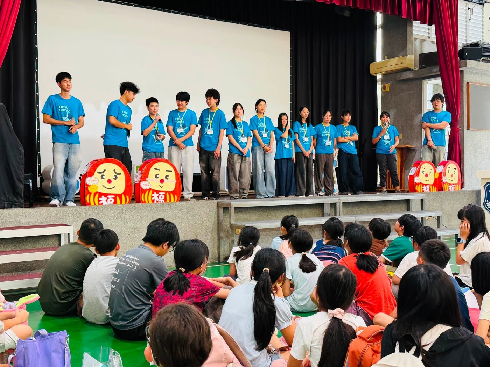
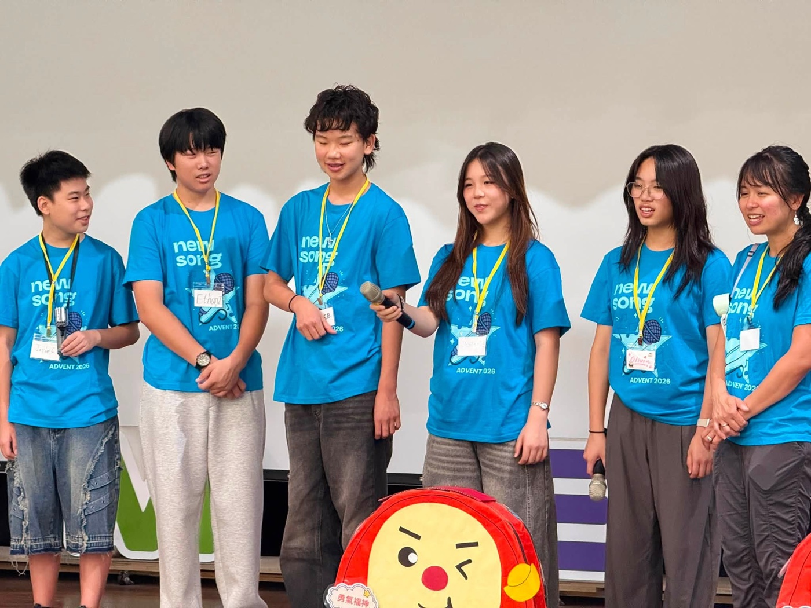
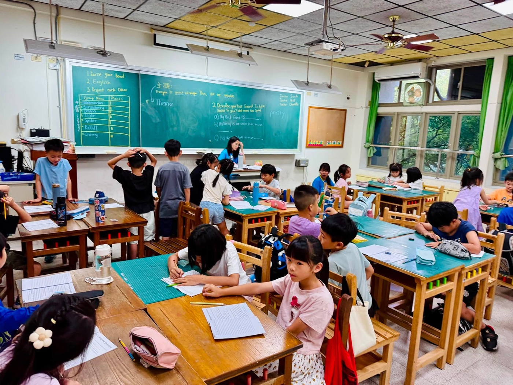
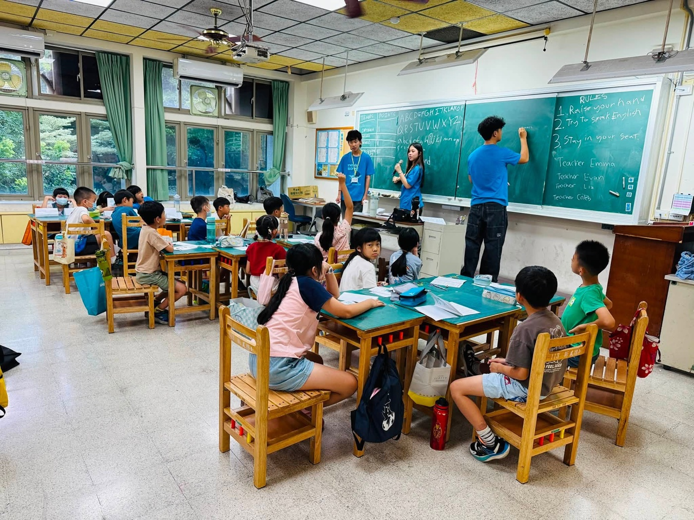

The 2026 Nehemiah Character English Camp officially launched at Hsinmin Elementary today — and it is everything we hoped for! Over five days, this camp is not just about learning English. It is a journey filled with love, character-building, and real international exchange. 🌏🇺🇸🇹🇼
Chinese-American youth volunteers from the ADVENT team brought their warmth and enthusiasm straight into the classroom — through drama, games, singing, hands-on activities, and heartfelt sharing. They created a fully immersive English environment where every child is encouraged to open their mouth, speak bravely, and express themselves with confidence. In laughter and connection, the children are building their global outlook and practicing the values of a good character, one day at a time.
Education is not just about accumulating knowledge — it is about lives influencing lives. A heartfelt thank-you to all the partner organizations who made this camp possible:
- Nehemiah International Volunteer Mission
- Changhua County Nehemiah Character Education Association
- Gloria American English Center volunteer teachers
- Ailing Association Tianzhong Care Center
Thank you for helping this cross-border love continue to shine at Hsinmin. 😊
Distinguished Guests at the Opening Ceremony
💛 Behind every successful camp is a wonderful support team. Special thanks to Ms. 蕭小萍 (General Affairs) for organizing daily meals; PTA President 陳志強 and the parents for warmly sponsoring meals and snacks; Director 蕭嘉樺 (General Affairs) for providing desks and refreshing drinks; 義峰 for thoughtfully preparing air-conditioning cards; and Director 益樑 (Academic Affairs) for setting up teaching equipment early in the morning and handling registrations. Together, they made sure every child had the most comfortable and complete learning environment possible.
🌏【讓世界走進新民，讓孩子勇敢走向世界🇹🇼🇺🇸】
一年一度最受孩子期待的✨2026尼希米品格英文營✨今天在新民國小正式展開！五天的營隊，不只是學英文，更是一場充滿愛、品格與國際交流的學習旅程❤️
來自美國 ADVENT 志工團隊的華裔青年，以滿滿的熱情陪伴孩子，透過🎭h話劇、🎲遊戲、🎤歌唱、🤝互動與分享，打造全英語的學習情境，讓孩子勇敢開口、自信表達，在歡笑中培養國際視野，也在生活中實踐良善品格。
教育，不只是知識的累積，更是生命影響生命。特別感謝 ❤️尼希米國際志工 ❤️彰化縣尼希米品格教育協會 ❤️葛洛麗亞美語中心志工老師及 ❤️愛鄰協會田中關懷中心共同投入，讓這份跨越國界的愛，在新民持續發光😊
開幕典禮感謝各界貴賓蒞臨，為孩子們加油鼓勵：✨蕭淑芬鎮長 ✨縣府秘書蕭岳倫先生 ✨縣府社會處李青璇督導 ✨鄭俊雄議員 ✨彭世和代表 ✨黃彩惠助理（陳素月立委服務處）✨王境銘里長 ✨新民國小黃懷萱校長 ✨家長會長陳志強會長
每一場成功的營隊，背後都有最堅強的行政團隊💦 感謝總務處蕭小萍小姐協助每日餐點安排；陳志強會長帶領家長會暖心贊助餐費與點心；總務處蕭嘉樺主任協助補足課桌椅並準備消暑飲品；義峰組長貼心準備冷氣卡；教務處益樑主任一早協助各班教學設備整備與報名事宜，讓營隊能夠順利展開，提供孩子最舒適、最完善的學習環境。
讓我們一起陪伴孩子，勇敢用英語與世界對話，在新民，遇見更好的自己💙
Words About Language & the World英語學習角 · 和語言與世界有關的小單字
Six key words from this story, each with an example sentence — then a five-question quiz. Tap 🔊 to listen.
六個關鍵字，每個字配一個例句，最後有五題小考。點 🔊 聽發音。
情境：兩位同學在聊尼希米英文營第一天的感受。